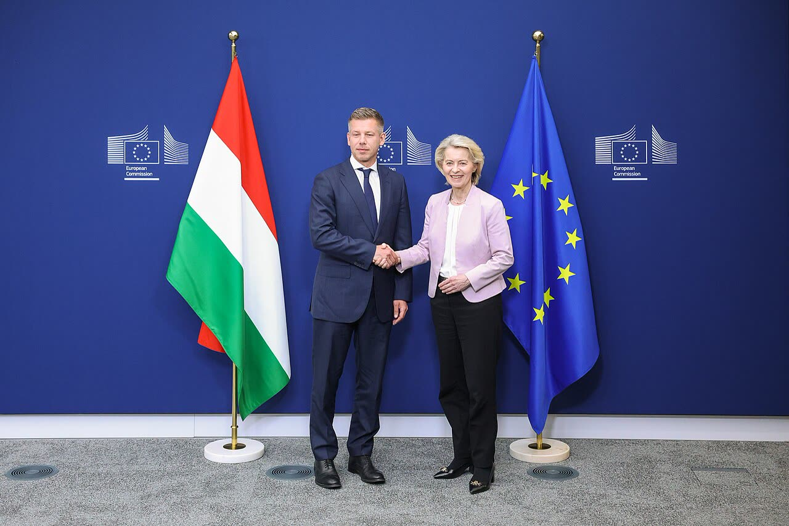

Magyar: fermato il fratello di Orbán con il sospetto di contrabbando di persone (da confermare)
Un governo che annuncia il fermo con una notizia nata in un sito di famiglia, prima che la polizia faccia il nome, alimenta l'accusa di regolamento di conti: l'accusa la formulino i giudici, non il premier.
Redazione Contrappunto · aggiornato il 09.11.2026


Lunedì 9 novembre 2026 il primo ministro ungherese Péter Magyar ha scritto sui social che, «secondo informazioni di stampa», Áron Orbán, fratello minore dell'ex premier Viktor Orbán, è stato fermato con il sospetto di contrabbando di persone. Magyar guida il governo del partito Tisza, uscito vincitore dalle elezioni di aprile 2026; Viktor Orbán, ora presidente del Fidesz, ha governato l'Ungheria per anni. Il «fermo» è una misura temporanea della polizia: non è una condanna e nemmeno un'accusa formale. Il nome di Áron Orbán, per ora, lo fa solo il premier: la polizia ha annunciato arresti e perquisizioni senza dire chi.
Vedi di più: 5 parole spiegate, cosa si racconta
Cosa si raccontaLe testate italiane riprendono l'annuncio di Magyar: La Stampa, il Giornale e il Fatto Quotidiano titolano «arrestato», ANSA, Repubblica e Tgcom24 «fermato». Viktor Orbán risponde che «il bersaglio sono io» e che il fratello è «solo uno strumento»; Magyar replica che Orbán avrebbe «confermato» il fermo. [ANSA] [La Stampa] [il Giornale] [Tgcom24] [il Fatto Quotidiano] [Index] [Origo]
- Fermo e arresto
- Il fermo (in ungherese «őrizetbe vétel») è una misura provvisoria prima di un'eventuale decisione del giudice; non è una condanna. Le testate italiane usano «fermato» e «arrestato» come sinonimi, ma non lo sono (La Stampa, Tgcom24, Index).
- NVVH
- Ufficio nazionale per il recupero e la tutela dei beni: ente nuovo, creato dal governo Magyar, che indaga sulla corruzione dei governi precedenti e ha preso in carico quattro procedimenti, tra cui quello sui visti legato al fratello di Orbán (La Stampa, Telex via EUobserver, HVG).
- NNI
- Nemzeti Nyomozó Iroda, la Polizia investigativa nazionale ungherese, che con l'NVVH ha condotto l'operazione (La Stampa, Index).
- Kontroll
- Sito di informazione ungherese che ha dato la notizia per primo; è di proprietà di Márton Magyar, fratello del premier (La Stampa, Il Giornale, Tgcom24 su AFP).
- Fidesz e Tisza
- Fidesz è il partito di Viktor Orbán, oggi all'opposizione; Tisza è il partito di Magyar, oggi al governo (Origo, Tgcom24).
- Magyar ha scritto che, «secondo informazioni di stampa», Áron Orbán è stato fermato; polizia e NVVH hanno confermato arresti e perquisizioni, ma senza fare il suo nome.
- La notizia è partita da Kontroll, sito del fratello di Magyar; Viktor Orbán parla di «regolamento di conti», senza smentire il fermo.
- Il sospetto indicato da Magyar, «embercsempészet» (contrabbando di persone), non coincide con «tratta» come titolano molte testate italiane.
In Ungheria a dire che Áron Orbán è fermato c'è solo il premier Magyar, che cita «informazioni di stampa»: la fonte è Kontroll, sito del fratello di Magyar. La polizia parla di arresti senza nomi. La Stampa, il Giornale e il Fatto Quotidiano titolano «arrestato»; Tgcom24 scrive «sarebbe stato fermato» e riporta il «regolamento di conti» denunciato da Viktor Orbán. In ungherese il sospetto è «embercsempészet», contrabbando di persone, non tratta. Quindi? Un premier non annuncia il fermo del fratello del suo avversario prima che la polizia faccia il nome: i fatti li stabiliscano giudici e procuratori. Áron Orbán ha la presunzione d'innocenza, come chiunque; e il potere che si vendica, di ogni colore, va guardato con sospetto. [1] [3] [4] [5] [6] [7] [8]
La verifica punto per punto3 passaggi, 12 fonti
Qui sotto ogni cosa scritta sopra, una per una, con le fonti. Confermato: lo dice un documento originale o più fonti lette. Plausibile: lo riportano fonti serie, ma non abbiamo letto l'originale. Discordante: le fonti danno numeri diversi, e diciamo quali. Ipotesi e Opinione sono il nostro ragionamento, separato dai fatti.
Cosa ha detto Magyar e cosa è confermato
Lunedì 9 novembre, in mattinata, il premier dell'Ungheria, Péter Magyar, ha scritto sui social (Facebook per Index e Origo/MTI; «tweet» per ANSA e La Stampa): «Sajtóinformációk szerint őrizetbe vették Orbán Viktor testvérét, Orbán Áront embercsempészet gyanújával», cioè «secondo informazioni di stampa» è stato fermato con il sospetto di contrabbando di persone; NVVH e NNI «continuano le indagini» (Index). La notizia era uscita prima su Kontroll, sito di proprietà di Márton Magyar, fratello del premier (La Stampa, Il Giornale, Tgcom24 su AFP, Index). La polizia ha poi annunciato fermi e perquisizioni a Budapest e in due località della contea di Pest in due procedimenti penali, senza nominare Áron Orbán e promettendo dettagli nel pomeriggio (Index, Origo, La Stampa); la presidente dell'NVVH, Anna Unger, non ha né confermato né smentito il nome, ma ha detto che l'ufficio ha compiuto «nuove attività investigative» nel caso che lo coinvolge (Index, La Stampa); fonti vicine a Áron Orbán hanno confermato l'operazione, senza sapere se sia stato fermato (Index). Viktor Orbán, presidente del Fidesz, ha risposto: «A célpont én vagyok, az öcsém csak eszköz», il bersaglio sono io e mio fratello è uno strumento, e ha scritto che «a leszámolás a figyelemelterelés eszköze» (Origo). Magyar ha poi scritto che Orbán «avrebbe confermato» il fermo (Index); nelle frasi di Orbán riportate da Origo non c'è una conferma esplicita.
Contrabbando di persone, non tratta
Il sospetto indicato da Magyar è «embercsempészet», che in ungherese è il contrabbando di persone (favorire ingressi irregolari), non la «tratta» (emberkereskedelem) che le testate italiane traducono con «traffico di esseri umani». Il caso noto, quello dei visti, non è un caso di sfruttamento: per ora è un presunto sistema di intermediazione per permessi di soggiorno.
Ragionamento: A favore: Index e Origo riportano la parola «embercsempészet» (non «emberkereskedelem»); La Stampa e il Fatto descrivono l'inchiesta come un presunto sistema di intermediazione per visti e permessi di soggiorno a vietnamiti e nepalesi, e il precedente di aprile, secondo il Fatto, riguardava il traffico di influenze. Contro: il comunicato di polizia non indica i reati, il dettaglio promesso nel pomeriggio non l'abbiamo letto e due procedimenti sono in corso, di cui uno potrebbe essere diverso. Le due parole ungheresi che distinguiamo sono la nostra lettura, non una verifica giuridica. Fiducia media.
Il nostro punto
Il garantismo vale per tutti, anche per il fratello di un leader che ci piace poco. Sul merito decideranno i giudici. Il metodo del premier, invece, è giudicabile oggi: annunciare un fermo con una notizia nata nel sito del proprio fratello, prima che la polizia faccia il nome, alimenta l'accusa di regolamento di conti, vera o falsa che sia. Un governo che ha creato un ufficio per recuperare i beni pubblici deve dimostrare di colpire i reati e non i rivali: serve la trasparenza degli atti, non i post.
Fonti12, tutte con il link
- Magyar, 'fratello di Orbán fermato per traffico di esseri umani' (9 novembre 2026) (ANSA) · consultata il 09.11.2026
- Ungheria, il fratello di Orbán fermato per traffico di esseri umani. L'ex premier: «Il vero bersaglio sono io» (9 novembre 2026) (la Repubblica) · consultata il 09.11.2026
- Il fratello di Orbán è stato arrestato in Ungheria per traffico di essere umani (9 novembre 2026) (La Stampa) · consultata il 09.11.2026
- Ungheria, arrestato il fratello dell'ex premier Orbán. È accusato di traffico di esseri umani (9 novembre 2026) (il Giornale) · consultata il 09.11.2026
- Ungheria, fermato fratello di Orban: sospetta tratta di esseri umani (9 novembre 2026) (Tgcom24) · consultata il 09.11.2026
- Áron Orbán arrestato per traffico di esseri umani (9 novembre 2026) (il Fatto Quotidiano) · consultata il 09.11.2026
- Magyar Péter: Orbán Viktor megerősítette, hogy őrizetbe vették az öccsét, Orbán Áront (9 novembre 2026, in aggiornamento) (Index) · consultata il 09.11.2026
- Orbán Viktor: A célpont én vagyok, az öcsém csak eszköz (9 novembre 2026) (Origo) · consultata il 09.11.2026
- Magyar Péter sajtóinformációkra hivatkozva bejelentette, hogy őrizetbe vették Orbán Viktor öccsét (9 novembre 2026) (Origo) · consultata il 09.11.2026
- Magyar Péter: Orbán Viktor öccsét is elfogták hétfőn (9 novembre 2026) (HVG) · consultata il 09.11.2026
- Arrest warrants issued in case involving Viktor Orbán's younger brother (24 aprile 2026) (Telex) · consultata il 09.11.2026
- Magyar waives his own immunity, as Hungary targets billions in alleged fraud (Day 143 of the Tisza government, 2 ottobre 2026) (EUobserver (Hungary Briefing di Telex)) · consultata il 09.11.2026